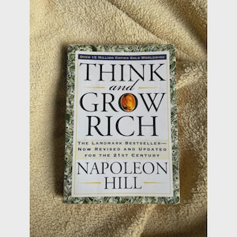

Library › Money & Finance
Think and Grow Rich — Summary & Key Lessons

The 13 steps to riches distilled from 25 years studying 500+ of the wealthiest people alive.
📖 OPEN THE FULL INTERACTIVE BREAKDOWN →🌐 Read it in Hindi, Hinglish, Gujarati, Tamil & 22 more languages — free, with audio.
💡 The Big Idea
Commissioned by Andrew Carnegie, Hill spent 25 years interviewing 500+ successes — Edison, Ford, Rockefeller — to extract the common formula. His answer: 13 principles beginning in the mind. Riches start with a burning desire, crystallize through faith and autosuggestion, take form through specialized knowledge, imagination, and organized planning, and are carried to completion by decision, persistence, and the mastermind. Thoughts are things — and thought mixed with definiteness of purpose and burning desire is the starting point of all achievement.
🧠 The 9 Key Lessons
Lesson 1: Desire: The Starting Point of All Achievement
Chapter 2: Desire
Wishing doesn't bring riches — desiring them with a state of mind that becomes obsession does. Hill's six steps: (1) fix the EXACT amount of money you want, (2) determine exactly what you'll give in return, (3) set a definite date, (4) create a definite plan and start NOW, ready or not, (5) write all of this as a clear statement, (6) read it aloud twice daily — morning and night — seeing and feeling yourself already in possession. Burn the ships: every great achiever left no retreat.
📖 Example: Edwin C. Barnes arrived at Edison's lab looking like a tramp, announcing he would become Edison's business PARTNER (not employee). Edison saw something in his bearing — 'he stood there like he meant it' — gave him a floor-sweeping job, and years later Barnes… Read the full example →
⚡ Do this: Do the six steps literally — exact amount, deadline, what you'll give, the written statement. Read it aloud twice a day starting tonight. Vague wishes produce vague lives.
Lesson 2: Faith & Autosuggestion: Programming Belief
Chapters 3–4: Faith / Autosuggestion
Faith is a state of mind that can be CREATED by repeated affirmation — the subconscious accepts and acts on any thought repeated with feeling, whether true or false initially. This is autosuggestion: you become what you repeatedly tell yourself, mixed with emotion. Most people run this process in reverse, affirming fear and lack all day. The formula only transmits when charged with feeling — mechanical repetition without emotion accomplishes nothing.
📖 Example: Hill tells of his own son, born without ears, whom doctors said would be deaf and mute. Hill spent years planting one suggestion: his handicap was an asset, not a liability. The boy developed near-normal hearing and later turned his condition into his career… Read the full example →
⚡ Do this: Write your affirmation in present tense, emotionally charged. Repeat it with genuine feeling twice daily — and catch yourself mid-sentence every time you affirm the negative.
Lesson 3: Specialized Knowledge & Imagination
Chapters 5–6
General knowledge, no matter how vast, doesn't produce money — knowledge is only potential power, becoming power when organized into definite plans of action. You don't need to possess all knowledge yourself: know where to get it (Ford's lesson) and organize those who have it. Then imagination — the workshop where plans are forged — turns knowledge into value. The synthetic imagination rearranges old concepts into new combinations; the creative imagination receives entirely new ideas. Ideas are the beginning of all fortunes.
📖 Example: Sued for calling him 'ignorant,' Henry Ford was grilled by lawyers with trivia questions. His answer: 'Why should I clutter my mind with general knowledge when I have men around me who can supply any knowledge I require, at the push of a button?' The… Read the full example →
⚡ Do this: Stop collecting general information. Define the ONE specialized knowledge your goal requires, source it (course, mentor, hire, partner), and organize it into a written plan.
Lesson 4: Organized Planning & Decision
Chapters 7–8
Desire without a plan is fantasy. Build practical plans in alliance with your mastermind group — and when a plan fails, replace it with another, and another: temporary defeat means only that something is wrong with the plan, not with the goal. Then, DECISION: Hill's analysis of 500 fortunes found every one of them had the habit of reaching decisions promptly and changing them slowly. Its opposite — procrastination — heads the list of the 30 major causes of failure. Opinions are the cheapest commodity on earth; keep your own counsel.
📖 Example: The 56 signers of the Declaration of Independence made a decision that could have cost each his life — prompt, definite, irreversible. Hill contrasts them with the majority of people, who can't even choose a restaurant without polling the table, and who… Read the full example →
⚡ Do this: Make the decision you've been postponing — within 24 hours. Then tell only the people essential to executing it. Everyone else gets to see results, not plans.
Lesson 5: Persistence: The Sustained Effort Muscle
Chapter 9: Persistence
Persistence is to character what carbon is to steel. Lack of it is the #1 cause of failure — and it's curable: it rests on definiteness of purpose, desire, self-reliance, definite plans, accurate knowledge, cooperation, willpower, and habit. Riches don't respond to wishes; they respond only to definite plans backed by definite desires, through constant persistence. The test comes disguised as defeat: most men quit at the first sign of opposition — the 500 richest all shared stories of succeeding one step BEYOND the point where defeat had overtaken them.
📖 Example: R.U. Darby's uncle struck gold in Colorado, hit a fault line where the vein vanished, and sold his machinery to a junk man for pennies. The junk man hired a mining engineer, who found the vein THREE FEET from where the Darbys stopped digging. The junk man… Read the full example →
⚡ Do this: Take your last abandoned goal. Honestly answer: did the goal fail, or did the plan fail and I quit? If the goal still burns, restart with a new plan — you may be three feet away.
Lesson 6: The Mastermind & the Mystery of Transmutation
Chapters 10–11
The Mastermind: two or more minds working in perfect harmony toward a definite purpose create a third, invisible force — no individual has ever achieved great power without it. Your mastermind supplies knowledge, energy, and courage you lack alone. Hill's related principle: your dominant energies and drives (including sexual/creative energy) can be transmuted — redirected from mere consumption into creative work, ambition, and magnetic personal force. The greatest achievers channeled their strongest drives into their mission.
📖 Example: Andrew Carnegie — who commissioned this book — attributed his entire fortune to his mastermind: ~50 men (chemists, managers, negotiators) whose combined minds ran his steel empire. Carnegie knew little about making steel and said so freely; he knew how to… Read the full example →
⚡ Do this: Assemble your mastermind: 2–5 people, definite shared purpose, meeting rhythm (weekly/biweekly), full harmony — one toxic member ruins the chemistry. Start recruiting this week.
Lesson 7: The Subconscious, the Brain & the Sixth Sense
Chapters 12–14
The subconscious mind is the connecting link: it works day and night, translating dominant thoughts into their physical equivalent — and it responds most to thoughts mixed with feeling. Seven positive emotions (desire, faith, love, sex, enthusiasm, romance, hope) fuel it; seven negatives (fear, jealousy, hatred, revenge, greed, superstition, anger) poison it — and positive and negative cannot occupy the mind at the same time. Master the switch. With practice, the tuned mind begins receiving hunches and flashes — the sixth sense — the apex of the philosophy.
📖 Example: Hill's 'Invisible Counselors': every night he held imaginary cabinet meetings with Lincoln, Napoleon, Emerson, Darwin — vividly consulting each on his problems. He insists the practice, pure imagination, delivered real solutions and reshaped his character.… Read the full example →
⚡ Do this: Institute a nightly 'board meeting': pick 3 minds you admire, pose your current problem, and write what each would advise. The answers you generate will surprise you.
Lesson 8: Outwitting the Six Ghosts of Fear
Chapter 15: How to Outwit the Six Ghosts of Fear
Before the philosophy can work, clear the enemies: the six basic fears — poverty, criticism, ill health, loss of love, old age, and death. Every human suffers from at least one. Fear of poverty kills ambition and breeds indecision; fear of criticism robs initiative and makes men bury their ideas ('what will they think?'). Fears are nothing but states of mind — and your state of mind is the one thing over which you have absolute control. Indecision crystallizes into doubt, the two blend into fear — slowly, which is why they must be caught early.
📖 Example: Hill notes fear of criticism as the great idea-killer: relatives and 'friends' sneer at any new venture, and most people surrender their dreams to a sneer. Barnes was mocked as a tramp, Ford was called ignorant, Darby was laughed at — every success in the… Read the full example →
⚡ Do this: Identify your dominant ghost (be honest — usually poverty or criticism). Write how it has shaped three past decisions. Then make one current decision AS IF the fear didn't exist.
Lesson 9: The Sixth Sense: The Genius of the Master Mind
Chapter 15: The Sixth Sense
Hill's final chapter describes the sixth sense — the subconscious creative faculty that synthesizes ideas, hunches and warnings beyond the five senses. It strengthens with experience and works best after you've internalized the earlier principles: desire, faith, planning and persistence. The sixth sense is why seasoned practitioners trust their intuition; it is pattern recognition the conscious mind can't articulate yet.
📖 Example: Hill describes how many of his most important decisions came as hunches after sustained mental preparation, and how inventors and executives report the same: the answer arrives whole after the groundwork is laid. The 'sudden' insight is the subconscious… Read the full example →
⚡ Do this: Before your next important decision, spend ten minutes in quiet review of all you know, then let the answer surface overnight before deciding.
✅ 5-Step Action Plan
- Complete Hill's six steps in writing — exact amount, date, plan, daily readings.
- Build your affirmation and charge it with real emotion, twice daily.
- Form a mastermind of 2–5 aligned minds with a fixed meeting rhythm.
- Make the postponed decision in 24 hours; share plans only with executors.
- Name your dominant fear and take one action this week in defiance of it.
⚠️ When This Doesn't Work
This book's faith-first formula is its most dangerous gift. Burning desire without due diligence is how Indians lose money in every generation — chit funds, land scams, crypto ponzis, MLM schemes. Desire is fuel, not navigation. Pair every 'I will be rich' with 'I have verified the numbers with someone who isn't selling me anything.' Faith without audit is how Bitconnect happened.
💀 The Graveyard Proves It
🪙 BitConnect — The $2.4 Billion Crypto Ponzi That Screamed 'Ponzi'. Burn: $2.4B from retail investors worldwide. Read the full case study →
💬 Best Quotes from Think and Grow Rich
- “Whatever the mind of man can conceive and believe, it can achieve.”
- “A quitter never wins — and a winner never quits.”
- “Both poverty and riches are the offspring of thought.”
Interactive version: mark lessons as read, listen in your language, share quote cards.